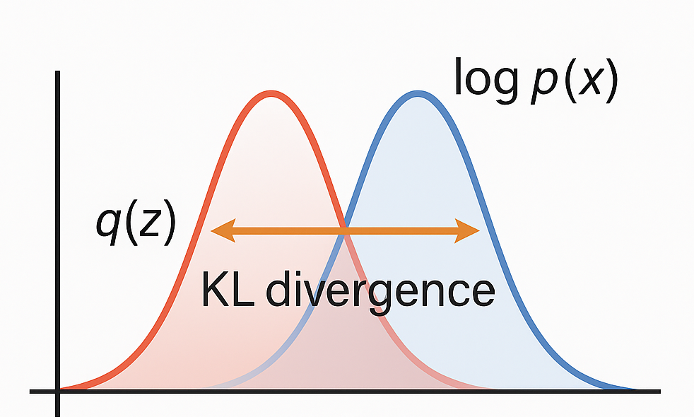

Diffusion : Kick-off
Genetrative Model Framework
Genetraion은 크게 두가지 framework으로 나뉜다.
- Likelihood-based
- Autoregressive Models
- Variational Autoencoders
- Flow-based Models
Diffusion models
- Implicit model
- Generative Adversarial Networks(GAN)
likelihood based 인 diffusion model에 관해 알아보자

Background
Diffusion은 확률 기반의 process이다. 먼저 핵심 확률 개념 3가지를 정리하자.
(1) KL-Divergence
두 확률 분포가 얼마나 다른지를 계산
$$ D_{KL}(q||p)= \begin{cases} -\displaystyle\sum_i q_i \log\frac{p_i}{q_i}, & \text{(discrete form)} \\ -\displaystyle\int q(x)\log\frac{p(x)}{q(x)}, & \text{(continuous form)} \end{cases} $$
식을 전개하면 self-entropy term과 cross entropy(or average of negative log-likelihood in p of samples from q)으로 분리할 수 있다.
$$ D_{KL} = -H(q) + H(q,p) $$
예를 들어, continuous form에 대해
$$ \int q(x) log(q(x))dx + \int q(x)(-log(p(x))dx\ = -H(q) + H(q,p) $$
로 쓸 수 있다.
예를들어, 우리가 q를 p로 근사시키기 위해, KL divergence를 minimize하면 Self Entropy term은 q의 variance를 증가시키켜 넓게 퍼진 분포가 되려는 경향을 갖게하고 Cross Entropy term은 p 분포에서 likelihood가 가장 높은 지점에서 Dirac -delta function처럼 되게하려는 경향을 갖게 할 것이다.
이 두 term을 통해 (싸우는 느낌?) q가 p로 근사가 된다.
KL divergence의 특성
항상 0 이상이다. CE는 아무리 낮아져봤자 (즉, q와 p가 같은 분포가 된다 했을 때) self-entropy이다. 그러므로 최솟값이 0이고, 절대 음수가 될 수 없다.
엄밀히는 거리 개념이 아니다.
일반적으로 $D_{KL}(p|q) \neq D_{KL}(q|p)$이다.
(2) Bayes Rule
복잡한 사후확률 p(z∣x)를 prior·likelihood·evidence 항으로 분해, ELBO와 KL 식 도출
$$ P(H \mid E) =\ \frac{P(H),P(E \mid H)}{P(E)} $$
E : Evidence(sample x, 증거·관측 데이터), H : Hypothesis(latent z ,가설)
| 기호 | 용어 | 의미 |
|---|---|---|
| $P(H)$ | Prior probability | 관측 전에 가설 $H$가 참일 사전확률 |
| $P(E \mid H)$ | Likelihood | $H$가 참일 때 증거 $E$가 나타날 가능도 → 가설 $H$가 증거 $E$를 얼마나 잘 설명하는지 |
| $P(E)$ | Evidence / Marginal likelihood | 가설을 구분하지 않고 $E$가 관측될 전체 확률 |
| $P(H \mid E)$ | Posterior probability | 증거 $E$를 본 뒤 가설 $H$가 참일 사후확률 |
(3) Monte Carlo Method
적분 대신 샘플 평균으로 근사
랜덤 표본을 뽑아(sampling을 통해) 함수값을 확률적으로 계산하겠다 이고 결국 근사(approximation) 시키겠다는 이야기다.
예를들면
$$ \int p(x)f(x)dx = E_{x \sim p(x)}[f(x)] \approx \frac 1 K \sum_i^K f(x_i), x_i \sim p(x) $$
확률 밀도함수 p(x)를 따르는 x에대한 f(x)의 기댓값을 구하고 싶다했을 때 p(x)에서 K개의 샘플을 뽑아 이로 계산해도 괜찮다는 이야기이다.
ELBO : Evidence Lower Bound
Variational Inference의 목표는 사후확률 분포(posterior) p(z|x)를 다루기 쉬운 확률분포 q(z)로 근사하는 것이다.
$q^*(z) = argmin_{q(z) \in Q} D_{KL}(q(z)||p(z|x))$
(1) KL 분해
bayes rule에 의해 우리는 사후확률 p(z|x)를 p(z), p(x), p(x|z)로 쓸 수 있다. 그러므로 Bayes Rule을 이용해 KL divergence를 이용해 이를 식으로 표현하면
$$ \begin{aligned} D_{KL}\bigl(q(z)|p(z\mid x)\bigr) &= \int q(z)\log\frac{q(z)}{p(z\mid x)} \mathrm dz \\ &= \int q(z)\log\frac{q(z)p(x)}{p(x\mid z)p(z)} \mathrm dz \\ &= \int q(z)\log\frac{q(z)}{p(z)} \mathrm dz + \int q(z)\log p(x) \mathrm dz - \int q(z)\log p(x\mid z) \mathrm dz \\ &= D_{KL}\bigl(q(z)|p(z)\bigr) + \log p(x) - \mathbb E_{z\sim q(z)}\bigl[\log p(x\mid z)\bigr] \end{aligned} $$
로 정리된다.
여기서 latent variable z 의 사전확률 분포 p(z)는 x와 무관해 가장 간단하고 예쁜 Gaussian이라 하자. 그 리고 q를 $\phi$, p를 $\theta$로 parameterize하자.
그런데 여기서 $\log p_{\theta}(x)$는 intractable하다. 그래서 우리는 tractable한 lower bound(ELBO)를 잡고 이를 maximize하는 방식을 취한다.Expectation : $D_{KL} (q_{\phi}(z|x) || p(z|x))$를 minimize하는 $\phi$를 찾자
Maximization : $\phi$를 고정하고 $\log p_{\theta}(x)$의 lower bound를 maximize하는 $\theta$를 찾자
$D_{KL} (q_{\phi}(z|x) || p(z|x))\ge 0$ 이므로
$$ \log p_{\theta}(x) \ge E_{z \sim q(z)}[\log p_{\theta}(x|z)] - D_{KL}(q_{\phi}(z|x)||p(z)) $$
가 된다.
(2) ELBO 정의
$$ {\text{ELBO}} = E_{z \sim q_{\phi}(z|x)}[\log p_{\theta}(x|z)] - D_{KL}(q_{\phi}(z|x)||p(z)) $$
1st term
$E_{z \sim q(z|x)}[\log p_{\theta}(x|z)]$
Reconstruction Error
→ generative model(Decoder in VAE), Decoder가 데이터를 얼마나 잘 복원하는가
2nd term
$D_{KL}(q(z|x)||p(z)) \text{ or } E_{q(z|x)} [\log \frac {q(z|x) }{p(z)}]$
Regularization term
→ inference model( Encoder in VAE ), $(q(z\mid x))$ 가 prior $(p(z))$ 와 얼마나 비슷한가
를 나타댄다.
정리하면
ELBO는 “likelihood가 얼마나 높을까?”를 계산 불가할 때 대신 끌어올 수 있는 안전한 하한선
Diffusion·VAE 등 Variational 모델은 모두 이 하한(ELBO)을 최대화하면서 실제 likelihood를 근사함
Diffusion 은 Likelihood-based 모델 계열이며, 학습 시 ELBO 최대화 로 파라미터를 최적화
ELBO는 $(\log p_\theta(x))$ 의 하한(lower bound), Reconstruction Error 와 Regularization term 으로 구성
Variational Inference 는 복잡한 사후분포를 단순 (q(z)) 로 근사하고, 그 차이를 KL Divergence 로 측정·최소화